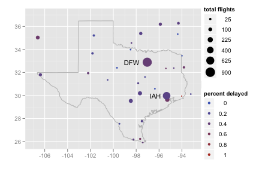
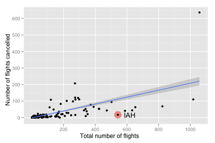
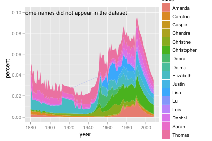
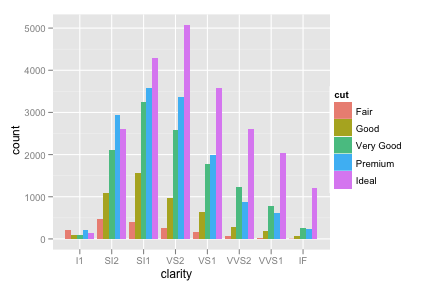
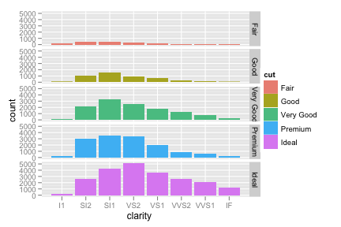

stat405
ggplot2 drills, by Garrett Grolemund
Recreate the graphs below by building them up layer by layer with ggplot2 commands.
Airlines data set
- 
Use
library(maps) texas <- map_data("state", "texas")to retrieve the coordinates necessary to make a polygon in the shape of Texas.texas <- map_data("state", "texas") texmap <- c( geom_polygon(data = texas, colour = "grey70", fill = NA), scale_x_continuous("", limits = c(-107, -93)), scale_y_continuous("", limits = c(25.9, 37)) ) ggplot(feb13, aes(long, lat)) + texmap + geom_point(aes(size = ntot, colour = ndelay / ntot)) + geom_text(aes(label = origin), data = subset(feb13, ndelay >= 100), size = 4, hjust = 1.5) + scale_area("total flights", to = c(1, 8)) + scale_colour_gradient("percent delayed") - 
ggplot(feb13, aes(ntot, ncancel)) + geom_point(data = subset(feb13, origin == "IAH"), size = 7, colour = alpha("red", 0.5)) + geom_point() + geom_text(data = subset(feb13, origin == "IAH"), aes(label = origin), hjust = -.5) + geom_smooth(method = "lm", se = T) + labs(y = "Number of flights cancelled", x = "Total number of flights") Include the words that appear on the graph.
Start by making the following data set
names <- read.csv("baby-names.csv", header = T, stringsAsFactors = F) class <- c("Rakesh", "Luis", "Yanli", "Yen-yin", "Sarah", "Delma", "Chandra", "Elizabeth", "Kim-chi", "Amanda", "Thomas", "Caroline", "Da", "Christine", "Debra", "Christopher", "Justin", "Lisa", "Meng", "Emilian","Rachel", "Lu", "Casper", "Jingjing", "Chengyong", "Ruo", "Zhongyu") class_names <- subset(names, name %in% class) class_names <- ddply(class_names, c("name", "year"), summarise, percent = sum(percent) / length(percent))ggplot(class_names, aes(year, percent)) + geom_area(aes(group = name, fill = name)) + geom_text(aes(year, percent, label = "*some names did not appear in the dataset"), data = data.frame(year = 1925, percent = 0.10), size = 4)Include the words that appear on the graph.

Use the same data set as above
Consider using
round_any()to make continuous variables discrete.ggplot(class_names, aes(year, percent)) + geom_boxplot(aes(group = round_any(year, 5, floor))) + geom_smooth(se = F, size = 1) + geom_text(aes(year, percent, label = "*blue line is a smoothed mean"), colour = "blue", data = data.frame(year = 1906, percent = 0.029), size = 4) + geom_text(aes(year, percent, label = "Popularity of class names as a group"), data = data.frame(year = 1911, percent = 0.03), size = 4)Create both graphs then comment on the merits of each one compared to the other.
 ggplot(diamonds, aes(clarity)) + geom_bar(aes(fill = cut), position = "dodge") ggplot(diamonds, aes(clarity)) + geom_bar(aes(fill = cut)) + facet_grid(cut ~ .)